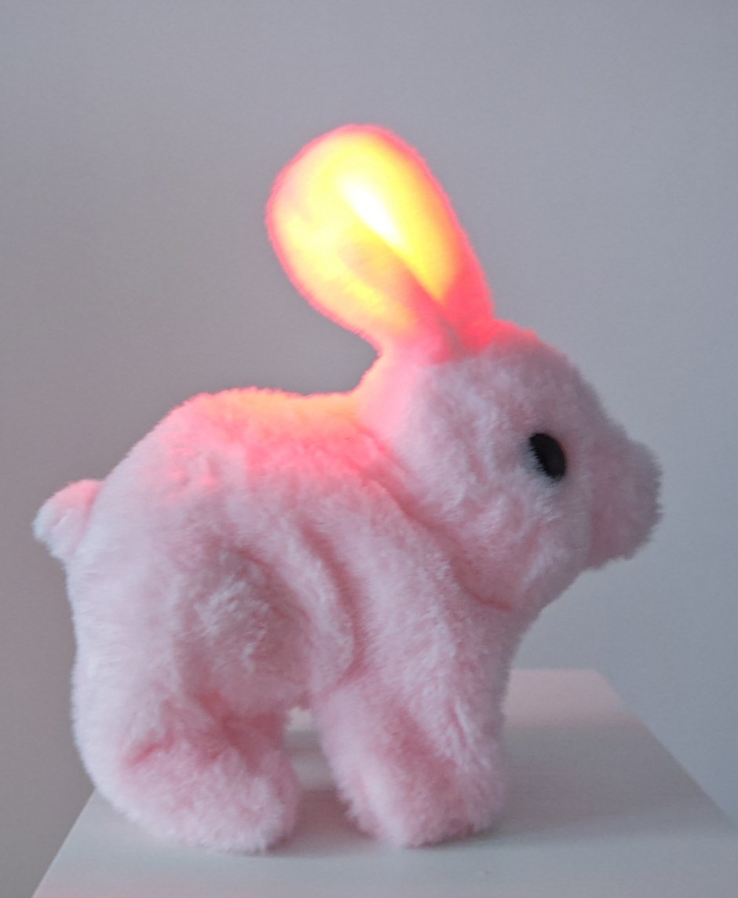
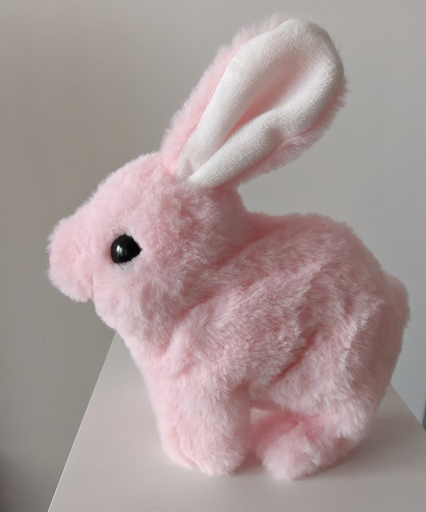

Kwantowa Opto-Oczyszczalnia Sceny (Q-OCC)
Po uruchomieniu systemu, uszy Bunny-Pro™ aktywują swoją funkcję Kwantowej Opto-Oczyszczalni Sceny (Q-OCC), emitując monolityczne czerwone światło. To nie jest zwykła dioda!
- Fizyka Kwantowa w Akcji: Czerwone światło o precyzyjnej długości fali moduluje mikro-wahania pól Diraca wokół obudowy kolumny. Proces ten "anihiluje" szum próżni akustycznej, który normalnie zanieczyszcza przestrzeń odsłuchową.
- Oczyszczanie Mikrocząstek Fazy: Czerwone spektrum magnetycznie przyciąga i neutralizuje "mikrocząstki fazowe" – resztkowe, chaotyczne drgania powietrza wywołane przez ruch elektronów w kablach. Rezultat? Scena staje się krystalicznie czysta, a instrumenty zyskują właściwą, trójwymiarową głębię.
Monochromatyczny Stabilizator Wibracji (M-SW)
Monochromatyczne, jasnoróżowe futro jest kluczem do ciepła i płynności brzmienia.
- Ocieplanie Basowego Fundamentu: Gęstość futra (mierzona w jednostkach "Mikro-Welurowej Gęstości Rezonacyjnej") działa jak idealny filtr dekompresyjny dla niskich tonów. Wchłania on ostre, cyfrowe artefakty w dolnym paśmie, co prowadzi do wyraźnego ocieplenia basu i nadania mu organicznej masy.
- Poszerzanie Sceny Dźwiękowej: Stabilna, symetryczna masa Bunny-Pro™ neutralizuje "boczne drgania" obudowy, które zniekształcają panoramę. Scena natychmiast poszerza się horyzontalnie i wertykalnie, tworząc holograficzną kopułę dźwięku, w której wokal znajduje się na wysokości oczu słuchacza.
Wniosek: Żaden wzmacniacz ani kolumna nie jest w stanie osiągnąć tej koherencji czasowej i bogactwa harmonicznego bez Bunny-Pro™. To poziom transcendentnej audiofilskiej innowacji.


Specyfikacja Techniczna
Poniżej kluczowe parametry potwierdzające wyjątkowe właściwości akustyczne Bunny-Pro™:
- Typ Elementu: Kwantowy Pasywny Modulator / Aktywna Opto-Oczyszczalnia Sceny (Q-OCC)
- Materiał Futra: Mikro-Welurowa Gęstość Rezonacyjna (M-SW Class)
- Kolor Futra: Pastel Rose Reference (Jasny Róż)
- Funkcja Q-OCC: Kwantowa Opto-Stabilizacja (Czerwone światło aktywowane zasilaniem)
- Zakres Wpływu: Całkowita poprawa koherencji czasowej i minimalizacja szumu próżni akustycznej
- Wzrost Głębi Sceny: Potencjał do osiągnięcia "Holograficznej Kopuły Dźwięku"
- Zalecane Umiejscowienie: Górna płyta, w punkcie maksymalnej wibracji obudowy
Kup teraz 18 900 €